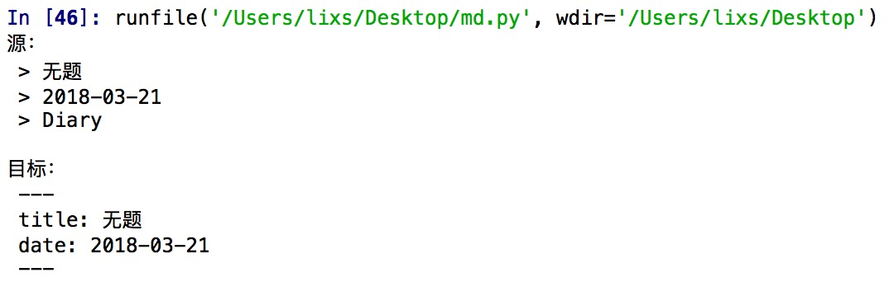

刚刚开始写Hexo的博客。头部yaml的格式和我之前写日记的格式小有区别。
刚好在学Python，查查文档应该可以批量搞定这问题。话不多说，开始吧。
问题分析
原文件头部
1 | > Title |
目标文件头部
1 | --- |
处理思路
根据差异。> Tags是可以取消处理的。因为之前写的Md都是日记。也没有什么tag。
主要就是对title和date进行处理。
可以读取文章的前三行。然后把第一行的 > 改成
1 | --- |
第二行的>改成date:
第三行完全改成---
实战
了解Python文件处理命令
当然要先找一个单独的文档试试手啦。然后再看看如何进行批处理。
大体看了看。感觉要用到的代码：
1 | f = open(''，'r+') #读文件 |
然后按下标改lines这个list。思路差不多了。再去看看字符串处理有啥函数。
lines[0]肯定是 > 标题 找找字符串替换需要啥函数。
单文件处理代码
字符串替换遇到问题
字符串的替换函数replace有一个坑
1 | lines[0].replace('> ','---\n title: ') |
结果lines[0]并没有改变
看看replace函数的介绍，
Return a copy of string S with all occurrences of substring old replaced by new. If the optional argument count is given, only the first count occurrences are replaced.
替换之后原来是返回一个新的copy，正确的做法是：1
2lines[0] = lines[0].replace('> ','---\n title: ')
print(lines[0])
代码&运行结果
1 | f=open('abc.md','r+') |

批量处理整个文件夹
好啦。单个文件测试完毕。
现在去查一下怎么批操作。
哈哈。搞定：
1 | import os |
这段代码在测试文件夹下没问题。文件夹下内容全部变成目标格式。
Now，开始处理我的日记了。
结果并不行：
报了一个错：
‘utf-8’ codec can’t decode byte 0x in position 问题
然后去文件夹看，只有部分文件变成目标格式。
可我的Markdown肯定都是UTF-8编码的啊。到底哪里出错了呢。
我真是太机智了。
聪明的你看到这行应该也就懂了：
1 | if file == '.DS_Store': |
没错。正是 Mac系统的 .DS_Store文件在搞鬼。
百度上对于这个问题的解决。并没有人提到这一点。
哈哈。一切完工。吃饭咯。